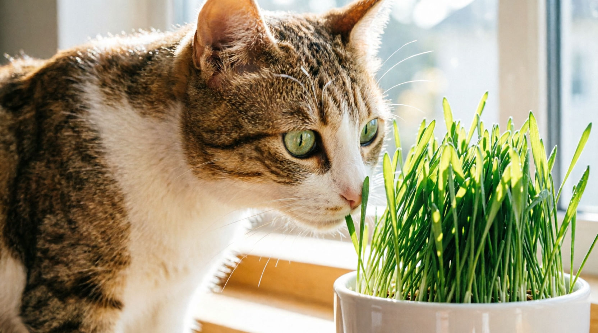

По своей природе кошки — хищные звери. Но иногда соображения собственного здоровья превращают их в травоядных! И тогда кошки могут совершать набеги на все домашние растения, от котовников и до циперусов. И на пальмы в кадке. И даже на букет роз, стоящий в вазе. Кошка начинает жевать растения не потому, что голодна, хочет рассмешить вас или тем более огорчить. Ей нужны витамины и, кроме того, растения помогают избавиться от шерсти, скапливающейся в желудке.

Кстати, некоторые растения очень ядовиты для кошек! Обычно животные сами понимают, что именно не стоит жевать, но какой владелец захочет рисковать здоровьем питомца. Поэтому напоминаем:
Кошке могут повредить: тюльпаны, гиацинты, ландыши, нарциссы, лилии (даже пыльца!), олеандры, крокусы. Кошек нужно беречь от таких популярных комнатных растений, как: азалия, цикламены, каланхоэ, диффенбахия, английский плющ, спатифиллум, гортензия. Фикусы, алоэ, монстеры, драцены — малоопасные, но и не полезные кошкам. Часто чтобы отвадить кота от цветка достаточно капнуть каплю цитрусового масла на лист растения или положить рядом с горшком апельсиновые корки.
Есть и лучшее решение: выращивать для кошки своё собственное растение. Чаще всего котоводы выращивают кошачью травку из семян пшеницы или овса. Побеги овса помогут кошке получать нужные витамины и зимой, и летом, если её не вывозят на дачу. Овёс нынче дёшев и не требует специального ухода. Единственное затруднение, которое может встретиться на пути кошковладельца-агрария: недостаток света в квартире, особенно зимой. При недостатке света травка растёт медленно и выглядит хилой и бледной, не очень сочной. Количества витаминов и каротина слабый свет тоже не прибавляет.
Светодиодная фитолампа для растений может скомпенсировать недостаток естественного солнечного освещения. Фитолампы с успехом применяют для выращивания травки для кошек, собак, попугайчиков и грызунов.
Трава для кошек, выращенная под достаточным освещением:
- нормализует пищеварение;
- даёт дополнительную клетчатку и витамины;
- очищает желудок от шерсти;
- отвлекает кошек от других растений.
Как выращивать траву для кошек?
В качестве семян возьмите пшеницу, овёс или специальную смесь семян травы кошек или домашних птиц. Положите горсть семян в контейнер, где собираетесь выращивать траву, равномерно распределите семена. Присыпьте семена землёй (около 0,5 см слой), полейте. Накройте контейнер прозрачной плёнкой, оставив небольшое отверстие для вентиляции. Через несколько дней, когда появятся всходы, траву можно начать освещать лампой для растений.
Рекомендуемое расстояние от лампы до всходов — 0,5 м, время освещения — от 12 до 15 часов. Когда земля начнёт подсыхать, полейте снова. Когда травка подрастёт до 7-10 см, её можно подавать к кошачьему столу. Когда через несколько недель травка будет съедена или увянет, выдерните её и посадите новые семена. Удобно засадить сразу два или три контейнера и чередовать их по мере поедания.